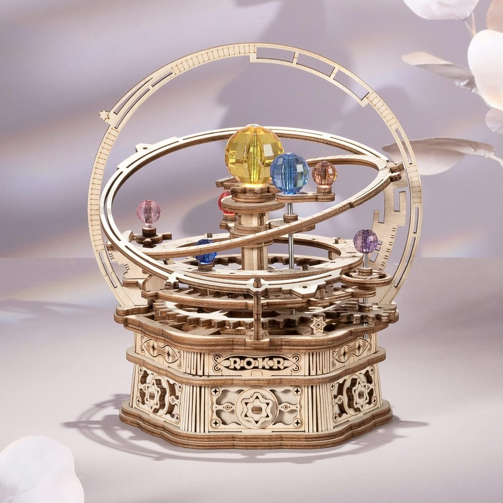
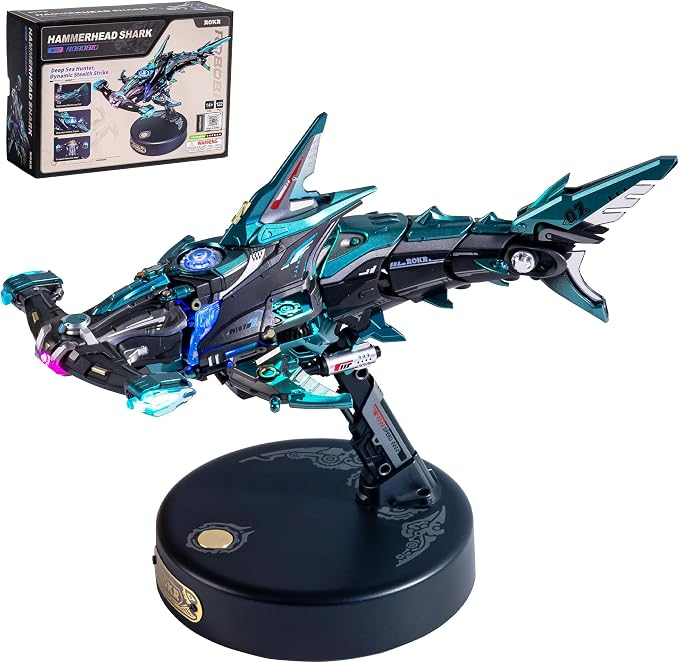
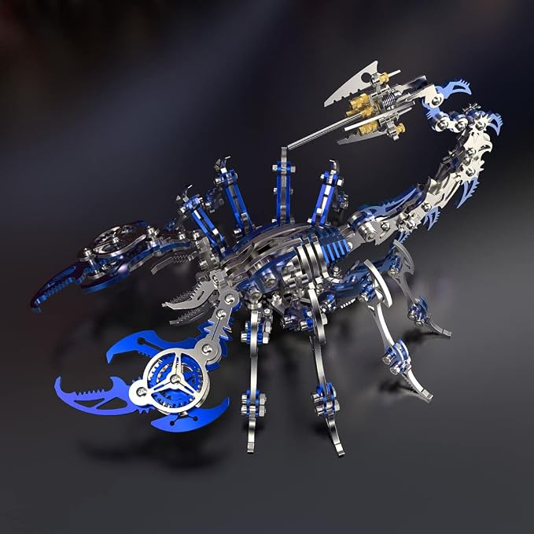

HISTORY OF 3D PUZZLES
3D puzzles started in the early 20th century, when wooden mechanical models and hand crafted architectural replicas first caught people's attention What started as simple carved pieces slowly grew into a whole world of imagination and creativity. As technology, materials and manufacturing grew, so did puzzles. Foam board landmarks that let you "travel" while building, plastic 3D jigsaw spheres that turned the idea of a puzzle into something new and as time passed stunning laser cut wooden kits we see today. Tiny pieces that you assemble yourself.
Over the years 3D puzzles became more than just toys. They've turned into a mix of art, design, problem solving, brain teaser attracting everyone from curious beginners who just want to try it to collectors. Each puzzle has a bit of history, very intricate craftmanship and a whole lot of joy for anyone who loves building something fun.
TYPES OF 3D PUZZLES
3D puzzles come in many styles, each with a diffferent challenge and joy. Whether you like hands on building, brain teasing metal puzzles or artitistic pieces there is a category that fits everybody.
-
Wooden 3D Puzzles: they are warm, tactile and really satisfying to build (if you like the smell of wood this might be for you). Most of it is mechanical models with gears, levers
and a lot of moving parts while others are tiny laser cut pieces that look like a work of art.
- -Difficulty: Medium to advanced
- -Price Range: $20-$130+ (on Amazon) Brand (ROKR)

I love them because they feel handcrafted, durable (unless you accidently drop it) and they make beautiful display pieces
- -Difficulty: Easy to medium (can be hard)
- -Price Range: $15-$60 (on Amazon) Brand (ROKR)
They're fun and often makes familar objects or landmarks.

- -Difficulty: Medium to hard
- -Price Range: $25-$100+ Brand (ROKR)
From what I've seen they're compact, clever and feels like soving a physical riddle.
